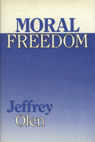

A thoughtful defense of the irreducibly "personal" nature of morality
A thoughtful defense of the irreducibly "personal" nature of morality


 A thoughtful defense of the irreducibly "personal" nature of morality
A thoughtful defense of the irreducibly "personal" nature of morality

|  |
Moral FreedomJeffrey Olencloth EAN: 978-0-87722-578-2 (ISBN: 0-87722-578-8) |
"[A] brief but probing examination of the moral realists and anti-realists."
—Andrew Oldenquist, The Ohio State University
Moral Freedom reconciles three apparently inconsistent truisms about morality: first, moral rules are society’s rules; second, morality is a matter of individual choice: and third, some things are wrong regardless of what any society or individual has to say. In developing a moral theory that accommodates all three truisms, Jeffrey Olen offers a view of morality that allows individuals a generous degree of moral freedom.
The author explores various answers to the question, "Does anybody or anything have any moral authority over how I live my life?" His answer is "No." In a lively, conversational style, Olen leads the reader through the arguments, examples, and exceptions that contribute to this conclusion. Along the way, he contends that what most philosophers call the moral point of view, but what he refers to as the impersonal moral point of view, is but one of two moral points of view. The other is the personal moral point of view, which Olen defends against the allegedly overriding demands of impersonal morality.
Moral Freedom considers the work of philosophers as diverse as Kant, Nietzsche, Kurt Baier, Bernard Williams, and Daniel Dennett. Admitting that this is a personal discussion of the nature of morality, Olen claims the "freedom" to engage these intellectual issues in a personal style to illustrate the personal moral point of view that he champions.
Jeffrey Olen is Professor of Philosophy at the University of Wisconsin, Stevens Point.
© 2015 Temple University. All Rights Reserved. This page: http://www.temple.edu/tempress/titles/535_reg.html.